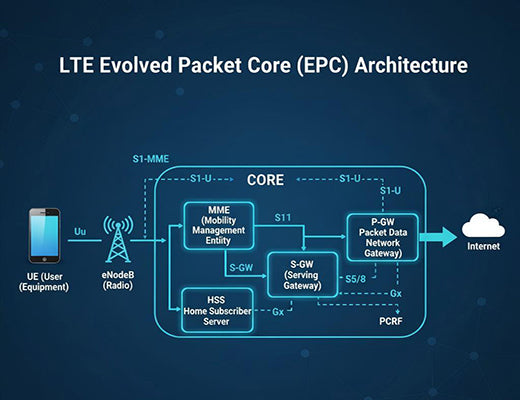
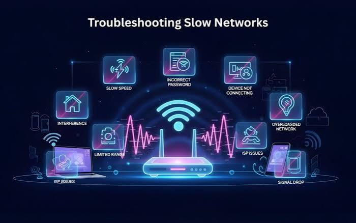
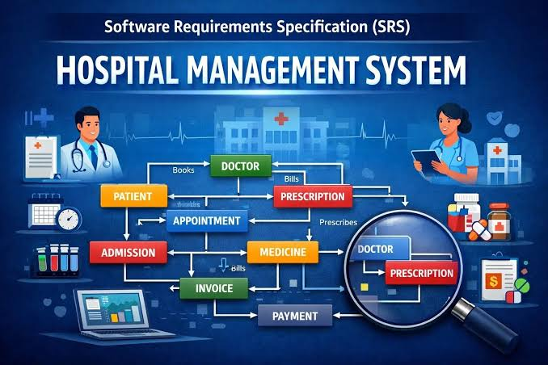

AVAILABLE FOR OPPORTUNITIES
Telecom & Network Engineer based in Bhubaneswar with hands-on experience in IT infrastructure, L1 network support, LTE/4G/5G architectures, Python automation, and Java Spring Boot development.
INTRODUCTION
Master of Computer Applications (MCA)
Gandhi Engineering College, BhubaneswarB.Sc. in Information Technology & Management
Ravenshaw University, CuttackI am a Telecom and Network Engineer with professional experience in IT infrastructure and network support, backed by an MCA and a B.Sc. in Information Technology & Management.
My technical expertise spans LTE, 4G, 5G, EPC core architecture (MME, SGW, PGW, PCRF), TCP/IP routing and switching, LAN troubleshooting, Python automation, Java Spring Boot, SQL, Linux, and Docker.
I enjoy diagnosing complex connectivity issues, optimizing network workflows, and building practical software tools that automate everyday operations.
Let's work togetherMY PROFESSIONAL & ACADEMIC JOURNEY
Odisha Forest Development Corporation (OFDC) — Delivered L1 network support, LAN troubleshooting, routing and switching maintenance, Windows system configuration, and enterprise IT infrastructure support.
LAN/WAN Troubleshooting | Routing & Switching | IT InfrastructureThe Skybrisk (Remote) — Developed backend REST services and web application modules using Core Java, Spring Boot, JDBC, and relational databases.
Java | Spring Boot | REST APIs | SQLGandhi Engineering College, Bhubaneswar — Specialized in Information Technology, enterprise software engineering, computer networks, and database management systems.
Information Technology & Computer ApplicationsRavenshaw University, Cuttack — Built a solid foundation in programming, networking fundamentals, operating systems, data structures, and IT management.
Information Technology & ManagementMY TECHNICAL EXPERTISE
TCP/IP, DNS, DHCP, LAN, WAN, Routing, Switching
LTE, 4G, 5G, EPC, MME, SGW, PGW, PCRF
Core Python, OOP, File Handling, Network Automation
Core Java, OOP, JDBC, Spring Boot
SQL, MySQL, Relational Database Management
Linux Administration, Docker, Git, AWS Basics
MY RECENT WORK

End-to-end protocol analysis of LTE attach procedures, Create Session signaling, default bearer establishment, and MME/SGW/PGW/PCRF interfaces.
View Project
Structured subnetting, DHCP/DNS configuration, VLAN routing, and packet-level connectivity diagnostics using Linux networking utilities.
View Project
Modular Python application for registering, updating, and querying patient records using structured file handling and object-oriented design.
View ProjectFull-stack web application built with Spring Boot and MySQL to log IT support tickets, track hardware inventory, and manage resolution workflows.
View ProjectMILESTONES & RECOGNITION
Selected to represent Gandhi Engineering College in the Internshala Student Partner (ISP) campus leadership program.
Selected for a competitive remote Full Stack Java Developer internship at The Skybrisk, building Spring Boot applications.
Successfully maintained LAN uptime, desktop configurations, and L1 network troubleshooting across operational workflows at OFDC.
GET IN TOUCH
Interested in working together or discussing a technical opportunity? Send me a message.
Feel free to contact me for job opportunities, professional networking or technical discussions.
harisankarm02@gmail.com LinkedIn GitHub